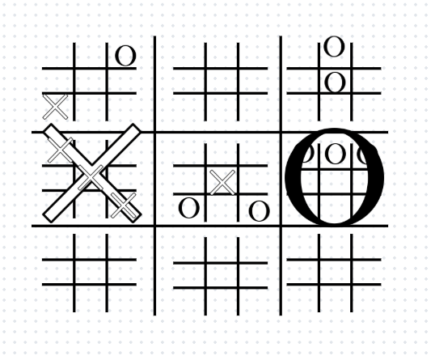
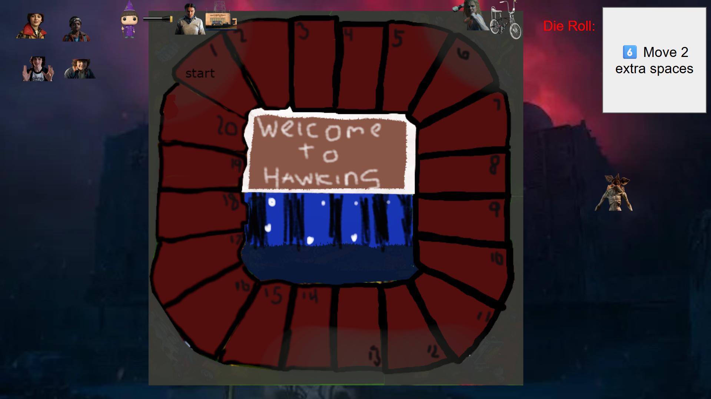
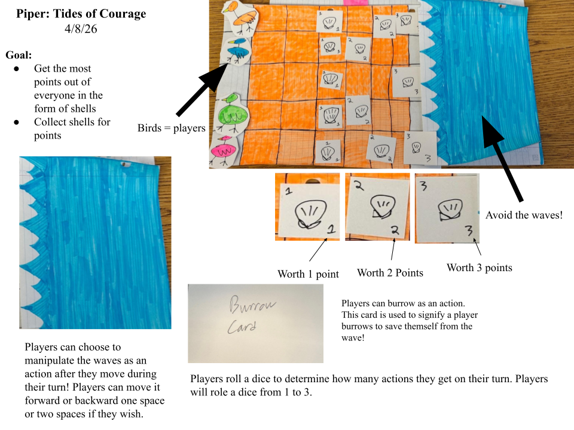
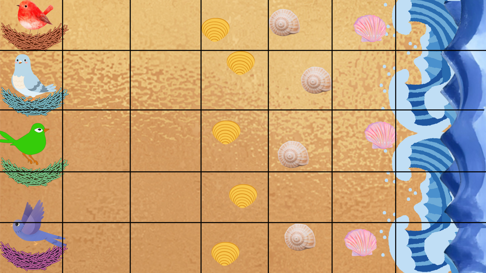

Aspiring Game Designer focused on strategic systems, player onboarding, and layered mechanics.
View ProjectsI design game systems centered around clarity, strategic depth, and player experience. My work explores how mechanics shape decision-making and how onboarding impacts engagement. I am currently studying Game Studies at the University of Delaware.
Project Overview:
This paper prototype explores Ultimate Tic-Tac-Toe, a layered two-player strategy game
built around a grid of smaller grids. The objective is to win three mini-boards in a row
on a larger meta-board, creating multi-level strategic decision-making.

Design Goal:
Increase the strategic depth of traditional Tic-Tac-Toe while keeping the rules
understandable for first-time players. The system needed to function entirely without code.
Core Mechanic:
Each move determines the opponent’s next board location. This forced board placement
creates two layers of strategic planning: players must think about winning the current
mini-board while also controlling their opponent’s next move.
Constraints:
Playtesting Insights:
Players initially needed clarification on the forced placement rule.
Once understood, they appreciated the added strategic complexity compared to standard Tic-Tac-Toe.
This reinforced the importance of onboarding and rule communication.
Iteration Concept:
A future iteration would expand the main grid from 9x9 to 18x18, increasing the
number of possible moves and encouraging deeper long-term planning.
This would preserve the core mechanic while significantly increasing strategic depth.
Reflection:
This project demonstrated that strong mechanics rely on clarity.
Even well-designed systems can fail if players do not immediately understand
how their decisions shape future outcomes.
Overview of the Game:
Players take on the roles of the kids of Hawkins: Will, Mike, Dustin, and Lucas, who are trapped in the Upside Down.
The goal is to reach the center “Welcome to Hawkins” sign while avoiding the Demogorgon. Players collect power-ups
to gain strategic advantages.
Game Designer: Evan Zinzi
Constraints:
Short, fast-paced board game; combine movement, chance, and strategy; reflect the Stranger Things theme.
Tools Used:
Google Slides (board prototype), Google Docs (rules), dice, tokens.

This project is a non-commercial fan game created for educational purposes. Stranger Things and all related characters, settings, and trademarks are the property of Netflix. All rights belong to their respective owners.
Design:
Playtesting Insights:
Next Steps / Iteration Concept:
Add a branching path allowing players to choose between a safer, longer route or a riskier, shorter path closer to the Demogorgon.
This increases meaningful strategic choices and enhances the tension-reward dynamic without slowing down gameplay.
Overview of the Game:
Piper: Tides of Courage is a party board game where players take on the role of shorebirds collecting shells along a dynamic shoreline. Players must decide how far to risk moving toward the water for higher-value shells while avoiding waves that can reset their progress. The goal is to reach 15 points first.


Game Designer: Evan Zinzi
Constraints:
Must be playable as a physical board game using simple components (dice, tokens, board layout) while remaining easy to learn but strategically meaningful.
Tools Used:
Paper prototype, dice, tokens, rule design, and playtesting feedback.
Design:
Playtesting Insights:
Next Steps / Iteration Concept:
Add a tide prediction system that allows players to anticipate wave movement. This would improve strategic planning and reduce frustration from unpredictability.
Email: ezinzi@gmail.com